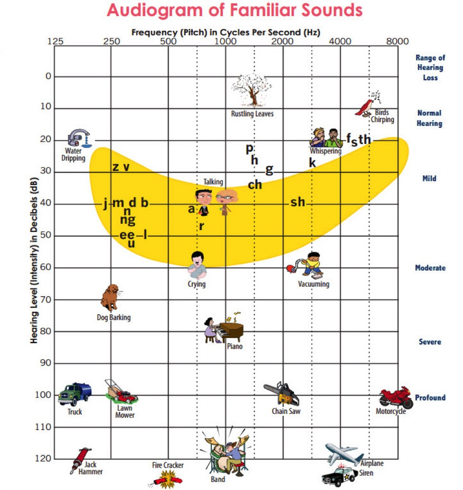
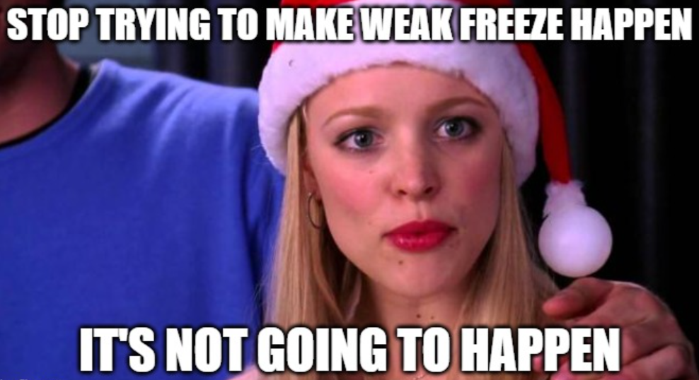
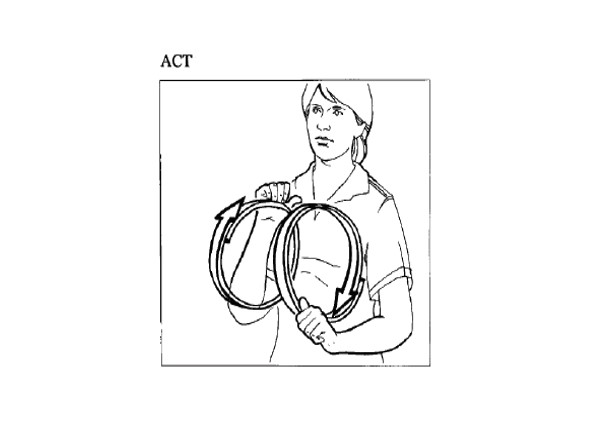

<img class="wide" src="ling_memes/morphologyclickbait.jpg"> (</small>From an anonymous student in an earlier 120 class</small>) --- # Reminder: SET evaluations by Thursday for EC - Currently at 29.06% --- # Sign Language Linguistics ### Matt Zaslansky - LIGN 101 --- ## ASL Structure vs. English Structure - Two languages in two modalities - <small>visual-gestural for ASL</small> - <small>aural-oral for English</small> - The two modalities exhibit different sub-lexical systems (e.g., phonology) <img class="wide" src="img/ASL_minimal_pair_summer_ugly_dry.jpg"> --- # Before we even talk about sign language - Let's revisit some assumptions we have about langauge --- ### Tom Holcomb’s five hallmarks of culture - language - heritage - customs - art - family or 'cultural players' <img class="small" src="people/tomholcomb.png"> --- ### Tom Holcomb’s five hallmarks of culture - The existence of a language suggests the existence of a wider human culture. Is this true for sign language(s)? --- ### Who are the cultural players for a sign language like American Sign Language? - Does American Sign Langauge belong to the American mainstream? - Consider where sign language shows up in American culture. --- ### Who are the cultural players for a sign languages? - If not other great apes, what about mer...men? - Note: The protagonist of the Shape of Water is 'mute.' Why not Deaf? <img class="wide" src="img/shape_of_water.png"> --- ### Who are the cultural players for a sign languages? - <a href="https://youtu.be/mDf48P4Zn9w?si=BCkYYgIeW896D9Qe&t=221">https://youtu.be/mDf48P4Zn9w?si=BCkYYgIeW896D9Qe&t=221</a> - What about interpreters? --- ### Who are the cultural players for a sign languages? - What about interpreters? <img class="r-stretch" src="img/interpreters.png"> --- ### Deaf people are the primary cultural players for sign languages - Like Millicent Simmonds - Recent winner of the Next Generation Award from the Hollywood Critics Association. --- ### Deafness comes at different times - Deafness can be from birth, from childhood, or later in life. --- ### Deafness can be partial - The speech banana  --- ### Deafness comes at different times - This is why we distinguish between capital-D 'Deaf' and lower-case 'deaf.' - It's the difference between culture and a physical description. > People are not born with culture; rather, they are born into a culture where strategies of survival are introduced to members of the community as they grow up. (Holcomb 2013: 17) --- # Cultural practices - All cultures have things they conventionalize - Hearing cultures have certain things they share. - speech - Sound as a signal: doorbells, alarms, car horns - Sound technologies: phones, microphones, amplifiers, speakers (in TVs, in computers, in shopping malls...) - culturally-specific idioms --- # English cultural practices: idioms - "It's raining cats and dogs!" - 16th-century England's thatched roofs <img class="r-stretch" src="img/idiom_raining_cats_dogs.png"> --- # English cultural practices: idioms - "It costs an arm and a leg!" - Portraits can be expensive (just ask Faith Moor) <img class="r-stretch" src="img/painting_faith_moor_de_Laszlo.png"> --- # ASL cultural practices: idioms - <a href="https://www.youtube.com/watch?v=ytZCgTGwpic&t=4s">TRAIN GO/GONE SORRY</a> </small> - Deaf Americans have experiences with trains ...and probably missing them! - Not too unlike ‘that ship has sailed’ for English. --- ### For more on the cultures around sign languages, check out LIGN 7 <img class="r-stretch" src="img/plug.jpg"> --- # Let's talk about American Sign Langauge (ASL) --- # Deaf History - Thomas Hopkins Gallaudet, b. 1787 - Hearing American minister, neighbor of Alice Cogswell. - Fell sick after graduating from Yale, while sick at home got to know Alice. - Promised Alice’s father to find a place to send Alice for an education. - Cogswell sent Gallaudet to London and then Paris. --- # Deaf History - Laurent Clerc, b. 1785 - Became a deaf teacher after being educated at Paris’s National Institute for the Deaf. - Meets Gallaudet in Paris in 1815. - Follows Gallaudet to the U.S. in 1816. - 1st Deaf teacher in the U.S. <img class="r-stretch" src="people/laurent_clerc.png"> --- ## L’Institut National de Jeunes Sourds de Paris - Established by Abbé de l’Eppe in 1760. - First school for the deaf ever. - Public school supported by the Church. Government funded from 1791. - Finally: a Deaf community for what became French Sign Language (LSF). <img class="r-stretch" src="img/paris_school_deaf.png"> --- ## Paris before the National Institute - Abbé de l’Eppe, b. 1712 - Abbé de l’Eppe knew the adapted French fingerspelling. - He fell into a bad situation within the church and needed to find a way to redeem himself. - Met two deaf twins, decided to devote himself to their education, founding a school for them by 1760. <img class="r-stretch" src="people/abbe_de_leppe.png"> --- ## Distinctive features in sign langauge phonologies - handshape/hand configuration - location - movement - palm orientation - NNMs (non-manual markers) - <small>Stokoe 1975; Battison 1978</small> - more recently, handedness has also been identified as a feature in its own right, following Battison's initial observations - <small>Brentari 1998; Eccarius & Brentari 2007; also my own Master's (Zaslansky 2018)</small> --- ## Phonological parameters: handshape - BASOC15 handshapes exist in a majority of ASL signs <img class="r-stretch" src="img/ASL_fingerspelling.png"> --- ## Phonological parameters: handshape - BASOC15 handshapes exist in a majority of ASL signs --- ## Phonological parameters: location - Forehead - Ear(s) - Nose - Mouth - Neck - Shoulder(s) - Upper arm - Torso --- ## Phonological parameters: movement - Movement can be a path movement when it involves the arms moving - circular - arc - straight - diagonal - tap - Movement can be 'internal' movement when it involves the fingers/wrists - finger wiggle - wrist twist --- ## Phonological parameters: movement - Movements also have directions - away from body - towards body - side-to-side - front-to-back - up-and-down - which brings us to... --- ## Phonological parameters: orientation - Orientation refers to which direction the palm of the dominant hand is facing - palm towards the signer - palm away from the signer - palm to the side - palm up - palm down --- ## Phonological parameters: non-manual markers (NMMs) - Linguistic facial expressions - NOT emotive facial expressions --- ## Phonological parameters: non-manual markers (NMMs) - yes/no question NMM <img class="r-stretch" src="img/vicars_NMM_yn.png"> --- ## Phonological parameters: non-manual markers (NMMs) - WH-question NMM <img class="r-stretch" src="img/vicars_NMM_whq.png"> --- ## Minimal pairs! - MOTHER vs. FATHER in ASL <img src="img/vicars_MOTHER.png"> <img src="img/vicars_FATHER.png"> --- <section class="clicker"></section> ### Which parameter is involved in the contrast for the minimal pair of MOTHER and FATHER? A) Handshape B) Location C) Movement D) Orientation E) NMMs --- ### Which parameter is involved in the contrast for the minimal pair of MOTHER and FATHER? A) Handshape B) <correct>Location</correct> C) Movement D) Orientation E) NMMs --- ## Minimal pairs! - CHILDREN vs. THING in ASL <img src="img/vicars_CHILDREN.png"> <img src="img/vicars_THING.png"> --- <section class="clicker"></section> ### Which parameter is involved in the contrast for the minimal pair of MOTHER and FATHER? A) Handshape B) Location C) Movement D) Orientation E) NMMs --- ### Which parameter is involved in the contrast for the minimal pair of MOTHER and FATHER? A) Handshape B) Location C) Movement D) <correct>Orientation</correct> E) NMMs --- ## Minimal pairs! - CHILDREN vs. THING in ASL <img src="img/vicars_FANCY.png"> --- <section class="clicker"></section> ### Which parameter is involved in the contrast for the minimal pair of MOTHER and FATHER? A) Handshape B) Location C) Movement D) Orientation E) NMMs --- ### Which parameter is involved in the contrast for the minimal pair of MOTHER and FATHER? A) Handshape B) Location C) <correct>Movement</correct> D) Orientation E) NMMs --- ## What about the phonological rules? <img class="wide" src="img/asl_die.gif"> - The sign for DIE - <small>ASL GIFs courtesy of Dr. Bill Vicars at <a href="http://www.lifeprint.com">http://www.lifeprint.com</a> </small> --- --- ### Meet the phonological rules - Weak Drop - Input any symmetrical non-alternating two-handed sign, output the same sign now without the non-dominant hand (it gets 'dropped') - Again, Handedness is now often viewed as an additional phonological parameter - Dominant hand (H1) vs. Non-dominant hand (H2) - Weak Freeze - Input a two-handed sign with trilled movement, output the same sign now without the any movement on the non-dominant hand (it gets 'frozen') - Note! These are phonological rules and so do not change the meaning of the sign. --- ### Weak Drop and Weak Freeze - Weak Drop and Weak Freeze are both allegedly phonological rules that apply to two-handed signs. - But they're not made equal. - Weak Drop is the way cooler sibling. - Or at least, Weak Drop has been of more interest to academics - <small>Battison 1978; Brentari 1998; Sandler 1989; Schermer 1990; Eccarius & Brentari 2007; Morgan & Mayberry 2012; Zaslansky 2018</small> --- ### Stop trying to make Weak Freeze HAPPEN  --- ### Weak Drop totally HAPPENS - Input any symmetrical non-alternating two-handed sign, output the same sign now without the non-dominant hand (it gets 'dropped') - This Symmetry Condition goes all the way back to Battison 1978: - The Symmetry Condition - > When two hands are active articulators in the production of a sign, they will share the phonological parameters of handshape, sign, and movement (though this can be alternating or synchronous). --- ### Weak Drop totally HAPPENS <img class="wide" src="img/ASL_weak_drop.jpg"> --- # There's even morphology --- # The Derivational Rules --- ## Activity Noun Rule - Input a verb, output a verbal noun ('act'->'acting') <div class="row"> <div class="column">  </div> <div class="column"> <img class="wide" src="img/ASL_acting.jpg" height="230" width="230"> </div> </div> --- ## Characteristic Adjective Rule - One handed 'adjectives' becomes alternating two handed 'adjectives' <div class="row"> <div class="column"> <img class="wide" src="img/ASL_understanding.jpg" height="350" width="350"> </div> <div class="column"> <img class="wide" src="img/ASL_flexible.jpg" height="230" width="230"> </div> </div> --- ## Characteristic Adjective Rule - We see allomorphy in the two-handed base forms, which become non-alternating in their characteristic adjectival forms <div class="row"> <div class="column"> <img class="wide" src="img/ASL_quiet.jpg" height="270" width="270"> </div> <div class="column"> <img class="wide" src="img/ASL_taciturn.jpg" height="230" width="230"> </div> </div> --- ## "Ish" adjectives - Input an adjectival verb X, trill it to output a derivational meaning 'sort of X' ('old'->'oldish') - Trill in the ASL tradition means 'repeated, tense/short motions' <div class="row"> <div class="column"> <img class="wide" src="img/ASL_old.jpg" height="150" width="150"> </div> <div class="column"> <img class="wide" src="img/ASL_oldish.jpg" height="150" width="150"> </div> </div> --- ### Weak Drop and Morphology - ASL has three synonymous variants of dual number inflection on object-agreeing verbs. - a two-handed sequential form, a two-handed simultaneous form, and a one-handed sequential form (which appears to exhibit Weak Drop!) - This is known as overabundance in inflectional morphology (Thornton 2011) - MOCK and ANALYZE are two-handed verbs underlyingly, but permit Weak Drop completely grammatically for singular arguments - Two interpretations: - Phonological: P follows M and therefore cannot ever apply to a derived or inflected wordform. - Morphological: Weak Drop is only ungrammatical when the argument is a dual object for this class of verbs! --- ### Weak Drop and Inflection - GIVE is a different class of verb that allows for Weak Drop to occur even in the inflected dual form. - Phonological: ? - Morphological: Weak Drop is tied to morpholexical classes --- ## Weak Drop and the Dual inflection - <img class="wide" src="img/ASL_mock_dual_weakdrop.jpg" height="550" width="600"> - <small>Zaslansky 2018</small> --- ## Weak Drop and the Dual inflection - <img class="wide" src="img/ASL_analyze_dual_weakdrop.jpg" height="550" width="600"> - <small>Zaslansky 2018</small> --- ## Weak Drop and the Dual inflection - - <small>Zaslansky 2018</small> --- ## Non-concatenative morphology everywhere - Cool! --- <img class="wide" src="morphology/bybee_analogy.jpg"> - <small>Bybee 1998</small> --- ## Other Sign Languages: Kata Kolok - <a href="https://www.youtube.com/watch?v=PwXBwV1YJ-s">Kata Kolok</a> --- ## Other Sign Languages: Hawai'i Sign Language - <a href="https://www.youtube.com/watch?v=gyVnDh7BQhU">Hawai'i Sign Language</a> - As opposed to the earlier name, 'Hawaiian Sign Language' - Not based off Hawaiian or any other language --- # Wrapping up - Sign languages are tied to Deaf cultures - Yes, some sign languages are used by hearing people, but Deaf people are the primary cultural players - They have their own grammars - Phonology and Morphology - Even syntax! - They also have their own histories, and some of them are endangered langauges with endangered cultures --- <huge>Thank you!</huge>